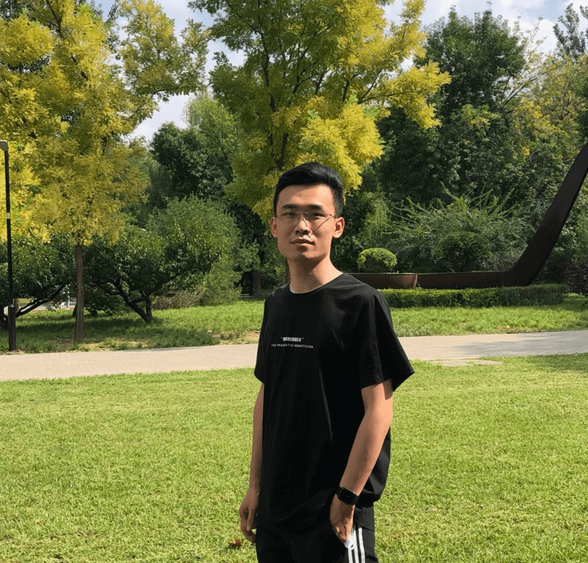
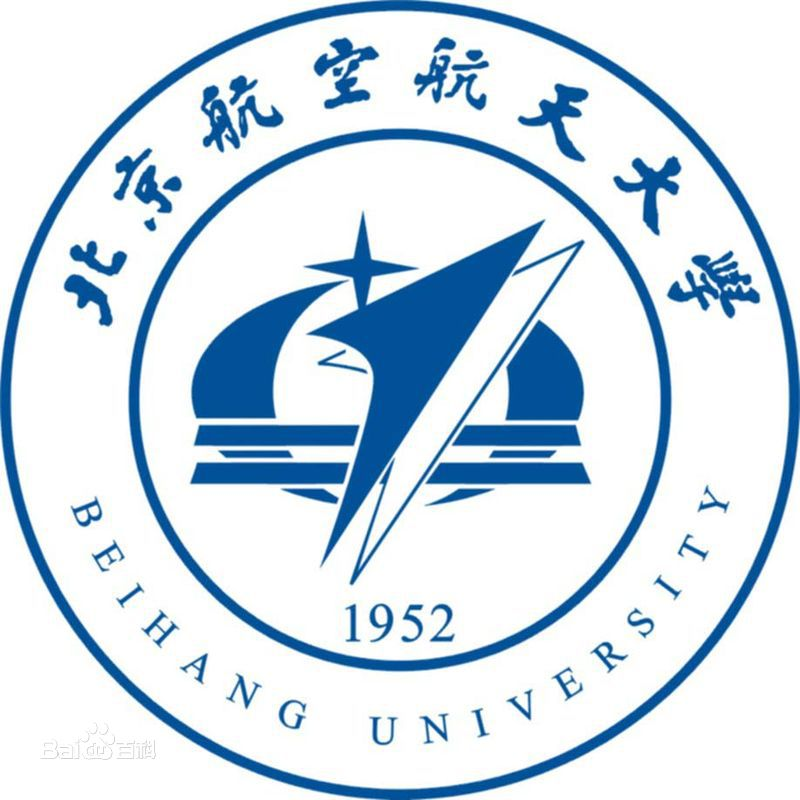
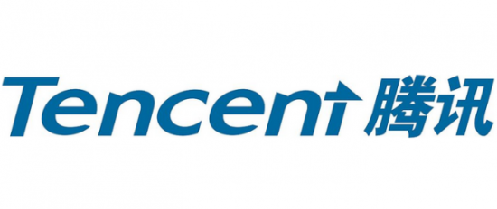
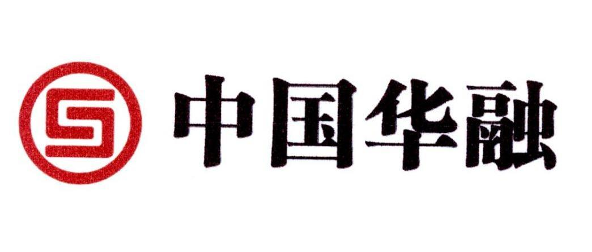

2020年毕业 字节跳动-抖音-全干打杂
邮箱：kbiao@qq.com 博客：blog.kbiao.me

荣誉/奖项：2018年“优秀研究生”
学生工作：年级支部书记
荣誉/奖项：国家奖学金 x1、特等奖学金 x4、一等奖学金 x1、
第八届英特尔大学生软件创新大赛三等奖
学生工作：学院学生会主席、班长


实验室维护的遗留系统，本用于学院课程教学用后推广到全校所有信息类课程使用
从单机系统支持200多人上机，逐步改进支持到近2000 以上学生同时上机考试的微服务系统，且对校外开放，积累上万名用户
源自本科当班长时候负责课堂点名的繁琐工作产生的想法，研究生期间使用小程序实现。创新性基于二维码传递授权，百人以上的 课堂一分钟内完成考勤，且作弊难度高，另有其他课堂教学辅助功能
支持 OPC ua 等物联网协议的消息中间件系统。上行接收机床控制设备私有协议数据，缓存、管理格式化为下游管理、控制系统所 需的json格式，并支持 HTTP/WebSocket/socket 多种协议访问。
从单机系统支持200多人上机，逐步改进支持到近2000 以上学生同时上机考试的微服务系统，且对校外开放，积累上万名用户